Кастильский биррет
headgear:castile_biretta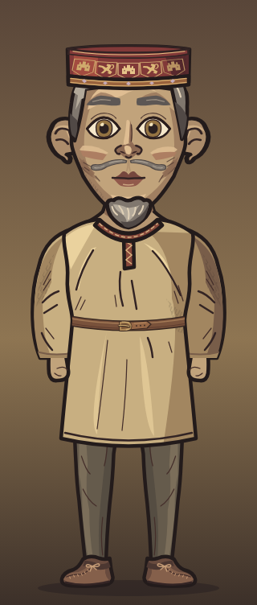
32 × 32
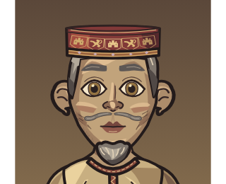
Погребальный ансамбль Фернандо де ла Серда датирован 1255–1275 гг., позже целевого периода.
Кастильский плиссированный токадо
headgear:castile_pleated_tocado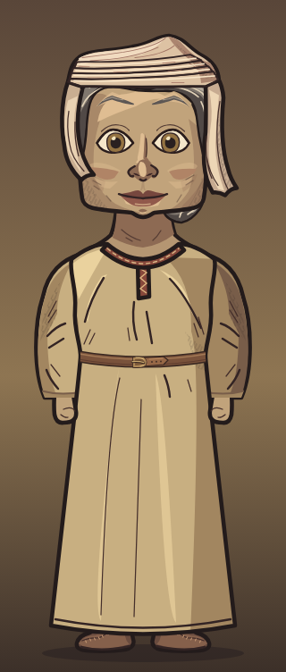
32 × 32
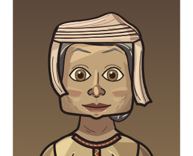
Ограничение источника: В INDEX нет фотографии кастильского плиссированного токадо.
Кастильский шёлковый чепец
headgear:child_castile_cofia 32 × 32
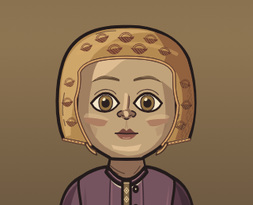
До и после
Обмотка ученика
headgear:child_iraq_school_wrap 32 × 32
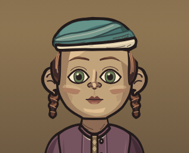
До и после
Тюрбан на миниатюре надет на учителя, а не на ученика.
Шёлковые ленты с жемчугом
headgear:child_song_pearl_ribbons 32 × 32
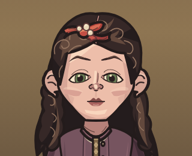
До и после
Дата создания полотна не указана; оно атрибутировано художнику Су Ханьчэню, работавшему в середине XII века.
Мягкая шапочка
headgear:child_song_soft_cap 32 × 32
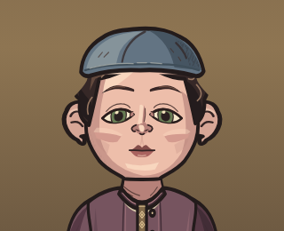
До и после
Музей называет головной убор просто шапкой и не подтверждает мягкий тканевый крой.
Эбоси
headgear:eboshi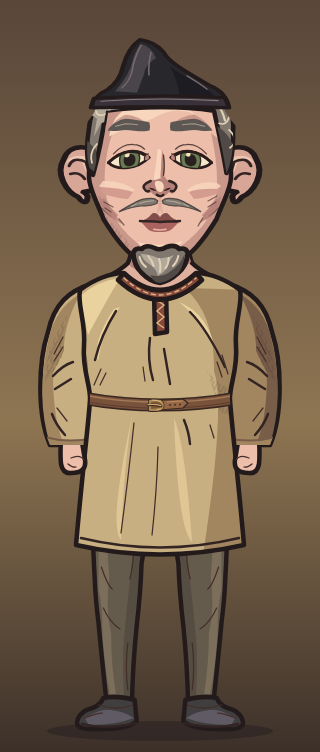
32 × 32
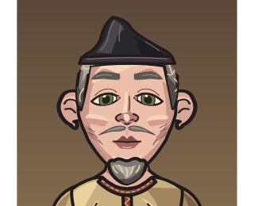
Скульптура датирована концом XIII — началом XIV века, частично позже целевого периода 1200–1250 годов.
Сунский футоу
headgear:song_futou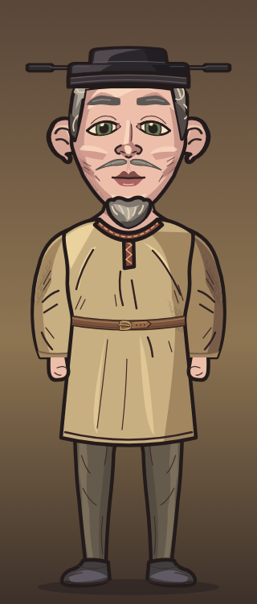
32 × 32
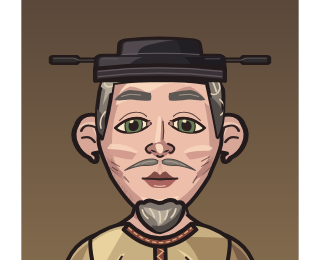
Дата портрета не указана, хотя изображён император, правивший в 1195–1224 годах.
Сунский венец с жемчугом
headgear:song_pearl_crown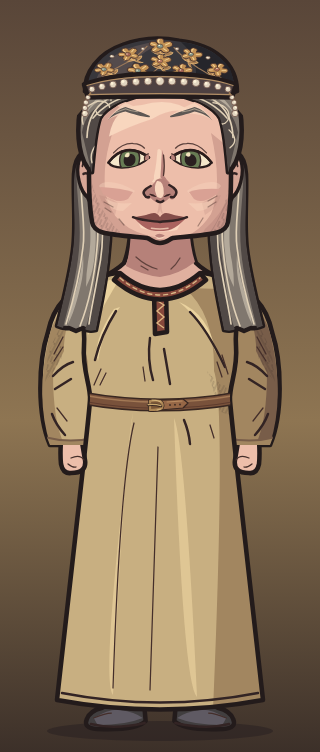
32 × 32
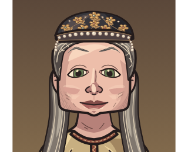
Дата портрета не указана; каталог описывает драконью корону со шпильками, а ряд жемчуга различим на изображении.
Бандиагара · хлопковая шапочка
headgear:tellem_cap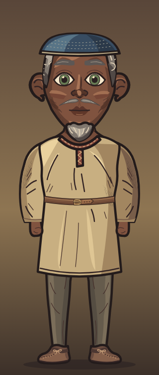
32 × 32
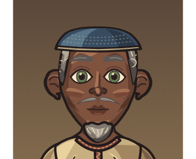
Сонникская фигура XIII века из района Бандиагара показывает близкую хлопковую шапочку, но не атрибутирована Tellem.
Танская шляпа с вуалью
headgear:weimao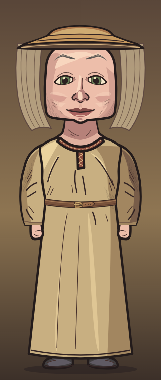
32 × 32
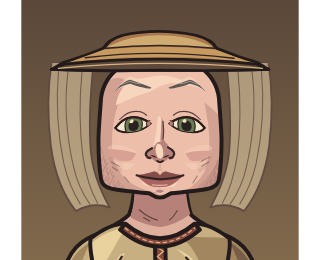
Фигурка эпохи Тан VII–VIII веков старше целевого периода; вуаль в скульптуре передана слабо.
Тюрбан из обмотанной ткани
headgear:wrapped_turban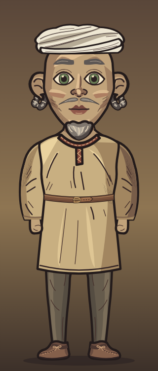
32 × 32
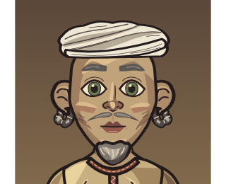
—